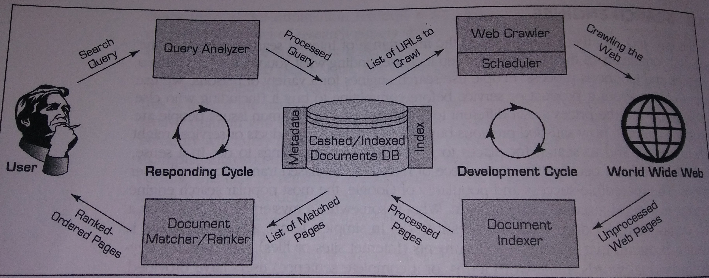

pkb contents > search engines | just under 1661 words | updated 12/29/2017
"Technically, 'search engine' is the popular term for information retrieval systems. Although Web search engines are the most popular, search engines are often used in other than the Web, such as desktop search engines and document search engines ... perhaps a more appropriate name for them would have been finding engines" (Sharda et al., 2014, p. 243).
Per Sharda et al. (2014, pp. 246-248), SEO is the "intentional activity of affecting the visibility of an e-commerce site or a Web site in a search engine's natural (unpaid or organic) search results ... As an Internet marketing strategy, SEO considers how search engines work, what people search for, the actual search terms or keywords typed into search engines, and which search engines are preferred by their targeted audience. Optimizing a Web site may involve editing its content, HTML, and associated coding to both increase its relevance to specific keywords and to remove barriers to the indexing activities of search engines. Promoting a site to increase the number of backlinks, or inbound links, is another SEO tactic."
AKA SEM; paid search
Good (2014), a content curator is distinguished from a content marketer in the following ways; he [sic]:
Or, the short version: “[never] forget what these people are looking for and what they really expect from anyone providing them with an answer”;“[take] seriously the information needs of your niche”.
Kanter (2013) provides an excellent summary (as she must) of how curation adds value to information:
Per Daly (2015):
Per EBizMBA, based on 2017 traffic data from Alexa, Compete, and Quantcast, ordered most to least popular:
In general, search engines work by crawling and automatically indexing content, thus creating metadata. This index may be fairly shallow, e.g. based on contents of the tag or headers; it may also be quite deep, using natural language process (NLP) techniques like grammatical stemming. User search terms are then matched to the index.
In the early days, there was a strong distinction in techniques used between search engines and library catalogs. Increasingly, though, KOSs from IA --- which take advantage of human knowledge by formalizing it for use by an information system --- play a role in improving search engine performance.
Per Sharda et al. (2014, pp. 243-246), a search engine involves two simultaneous cycles: "[w]hile one is interfacing with the World Wide Web, the other is interfacing with the user."

(AKA Web spider, spider)
"A Web crawler starts with a list of URLs to visit, which are listed in the schedule and are often called the seeds. These URLs may come from submissions made by Webmasters, or, more often, they come from the internal hyperlinks of previously crawled documents/pages. As the crawler visits these URLs, it identifies all the hyperlinks in the page and adds them to the list of URLs to visit. As the documents are found and fetched by the crawler, they are stored in a temporary staging area for the document indexer to grab and process."
"[R]esponsible for receiving a search request from the user (via the search engine's Web server interface) and converting it into a standardized data structure, so that it can be easily queried/matched against the entries in the document database ... quite similar to what the document indexer does ..."
Per some search algorithm,
"Leading search engines like Google monitor the performance of their search results by capturing, recording, and analyzing postdelivery user actions amd experiences. These analyses often lead to more and more rules to further refine the ranking of the documents/pages so that the links at the top are more preferable to the end users" (Sharda et al., 2014, p. 246).
Per Sharda et al. (2014):
"[E]arly search engines used a simple keyword match against the document database and returned a list of ordered documents/pages, where the determinant of the order was a function that used the number of words/terms matched between the query and the document along with the weights of those words/terms" (Sharda et al., 2014, p. 246)
(or Hypertext Induced Topic Selection??)
(semantic reasoning and query rewriting)
(machine learning)
Daly, J. (2015, May 5). How to write a great roundup post. Retrieved from http://www.cornerstonecontent.com/how-to-write-a-great-roundup-post/
Good, R. (2014, March 18). Content curation is not content marketing. MasterNewMedia. Retrieved from http://www.masternewmedia.org/content-curation-is-not-content-marketing/
Kanter, B. (2013, December 13). How nonprofits get significant value from content curation. Beth's Blog. Retrieved from http://www.bethkanter.org/content-curation-2/
Sharda, R., Delen, D., & Turban, E. (2014). Business intelligence: A managerial perspective on analytics (3rd ed.). New York City, NY: Pearson.
Hedden, H. (2016). The accidental taxonomist (2e). Medford, NJ: Information Today, Inc.